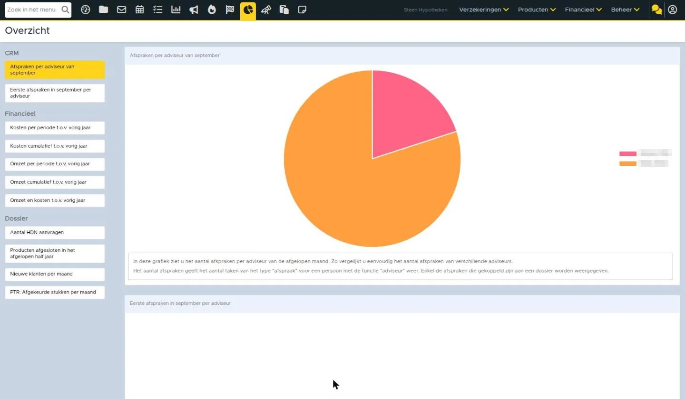

Managementinformatie

Met eBlinqx Connect Insights heb je inzicht in de data van je eBlinqx Connect omgeving. Gegevens in het systeem worden omgezet in overzichtelijke grafieken. Zo heb je eenvoudig, realtime en overal inzicht in al je managementinformatie.
Let op: De grafieken zijn alleen zichtbaar voor gebruikers die recht hebben op de winst & verlies module. Wanneer andere gebruikers ook inzicht willen hebben in de grafieken, kunnen ze dit aanvragen bij een consultant of via support-eblinqx@blinqx.tech
Beschikbare grafieken
Omzet en kosten
Om de bedrijfsresultaten van dit jaar te vergelijken met vorig jaar, zijn de cijfers per maand inzichtelijk gemaakt in een staafdiagram.
Omzet per maand
Deze staafdiagram weergeeft de totale omzet per periode van dit jaar ten opzichte van vorig jaar in dezelfde periode. Zo zie je hoeveel omzet je in iedere periode maakt en vergelijk je direct dit met dezelfde periode in het vorige jaar.

Omzet cumulatief
In deze staafdiagram zie je de cumulatieve omzet van dit jaar ten opzichte van vorig jaar in dezelfde periode. Hiermee vergelijk je eenvoudig de totale omzet van dit jaar met vorig jaar.

Kosten per maand
Deze grafiek presenteert het aantal kosten per periode van dit jaar, ten opzichte van dezelfde periode vorig jaar. Zo zie je hoeveel kosten je in iedere periode maakt en vergelijk je dit met dezelfde periode in het vorige jaar. De kosten weergeven het totaal van alle kostenrekeningen van je administratie.

Kosten cumulatief
In deze grafiek zie je het cumulatief aantal kosten van dit jaar ten opzichte van vorig jaar in dezelfde periode. Hiermee vergelijk je de totale kosten van dit jaar met het voorgaande jaar.

Volledig overzicht omzet en kosten
Deze grafiek toont de totale omzet per maand, ten opzichte van de totale kosten per maand. Deze cijfers worden weergegeven voor het huidige jaar en voor vorig jaar. Met deze grafiek zie je hoeveel omzet en kosten je in iedere maand maakt en vergelijk je dit met dezelfde maanden in het vorige jaar.

Aantal afspraken
Aantal afspraken per adviseur
Deze cirkeldiagram toont het aantal afspraken per adviseur van de laatst afgelopen volledige maand. Met deze grafiek kun je het aantal afspraken van verschillende adviseurs eenvoudig vergelijken.
Aantal eerste afspraken per adviseur
In deze cirkeldiagram wordt het aantal eerste afspraken per adviseur van de laatst afgelopen volledige maand weergegeven. Zo vergelijk je eenvoudig het aantal eerste afspraken van verschillende adviseurs.
Het betreft een ‘eerste’ afspraak wanneer de personen in het dossier nog niet eerder een afspraak met deze adviseur hebben gehad. Het aantal afspraken weergeeft het aantal taken van het type “afspraak” voor een
persoon met de functie “adviseur”. Enkel de afspraken die gekoppeld zijn aan een dossier worden weergegeven.

Aantal nieuw gesloten producten
Als advieskantoor wilt je weten hoe de indeling van de portefeuille verdeeld is. Om dit snel in te zien, zijn de types producten die onlangs gesloten zijn inzichtelijk gemaakt. Daarnaast zie je hoeveel HDN aanvragen er gedaan zijn, afgezet tegen het gemiddelde van de markt.
Producten gesloten in het afgelopen half jaar
In deze grafiek zie je het aantal producten met een startdatum in de afgelopen 6 volledige maanden. Zo zie je welke producten er het afgelopen half jaar afgesloten zijn.

Aantal HDN aanvragen ten opzichte van de markt
Deze lijngrafiek weergeeft het totaal aantal aanvragen voor hypotheken (AX), levensverzekeringen (LX) en kredieten (KX) per week (ma t/m zo). De aanvragen van jouw organisatie worden weergeven door de blauwe lijn. Daarnaast weergeeft de grijze lijn het aantal HDN aanvragen van het alle advieskantoren in Nederland.

First time right stukken
In deze grafiek worden de stukken getoond die het vaakst afgekeurd worden door de maatschappijen.

Nieuwe klanten per maand
Hierin worden de nieuwe klanten per maand getoond op basis van de startdatum van het eerste product in het dossier.

Managementgrafieken op het dashboard
Er zijn 2 grafieken beschikbaar als tegel op het dashboard, namelijk afspraken in maand per kantoor en producten afgesloten in het afgelopen half jaar. Deze tegels zijn alleen zichtbaar als je inzicht heb in de managementgrafieken. Klik erop om de managementinformatie-pagina te openen.

Om deze tegels te zien op je dashboard, moet je ze zelf inrichten. De tegels heten ‘Producten afgesloten in het afgelopen half jaar’ en ‘Afspraken in maand per kantoor’.
Zo ziet het er nu uit in eBlinqx Connect
